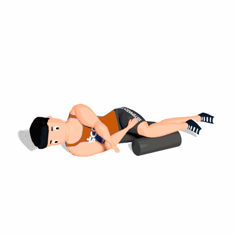

Rotação de Tronco Deitado de Lado com Rolo

O exercício irá trabalhar a mobilidade da região torácica, auxiliando nas execução de atividades físicas.
Ficha Técnica
Tipo: Pilates
Grupo Muscular: Costas
Aparelho: Nenhum
Músculos: Nenhum
Como realizar
- Deite de lado, coloque a perna de cima sobre um rolo e a outra mantenha estendida;
- Alinhe suas palmas das mãos e inspire, vá expirando lentamente e levando seu braço de cima até o outro lado, fazendo assim uma rotação de tronco;
- Inspire novamente e retorne a posição inicial soltando o ar novamente pela boca;
- Depois de concluir as repetições, inverta o lado do corpo e repita o movimento.
 RC STORE
RC STORE